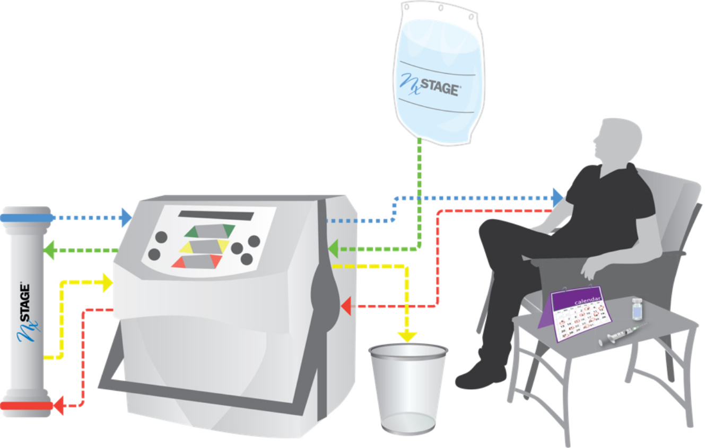

GI View · Engineering · Process
Manufacturing Yield: 20% → 80%
The production team was optimizing an assembly process that wasn't the real problem. I reframed it: the variability wasn't a people issue or a components issue — it was a process architecture issue. Nobody had scoped it that way before, and nobody had asked me to fix it. I diagnosed it, defined the project, and initiated it from scratch.
From there I owned everything. Defined the requirements and success criteria, designed and prototyped two parallel solutions — a mechanical assembly tool that constrained sensitive components into repeatable positioning, and a software tool that evaluated image quality in real time during assembly, actively directing the assembler toward correct positioning before anything was locked in. Iterated both through months of hands-on testing with the production team. When the tools were validated, I wrote the full production instructions the team would follow going forward.
The result wasn't just a yield improvement. It was a repeatable, documented process where there hadn't been one before.
From there I owned everything. Defined the requirements and success criteria, designed and prototyped two parallel solutions — a mechanical assembly tool that constrained sensitive components into repeatable positioning, and a software tool that evaluated image quality in real time during assembly, actively directing the assembler toward correct positioning before anything was locked in. Iterated both through months of hands-on testing with the production team. When the tools were validated, I wrote the full production instructions the team would follow going forward.
The result wasn't just a yield improvement. It was a repeatable, documented process where there hadn't been one before.
Yield: 20% → 80%, directly accelerating FDA submission capacity.
Root cause reframing · 0→1 project ownership · Hardware design · Process improvement · Cross-functional execution

NxStage Medical · Systems Engineering
Root Cause Investigation — Class II Hemodialysis Device
Joining an established regulated-environment company mid-investigation meant getting up to speed on a complex multi-physics system fast — mechanical, fluidic, and electronic — and contributing meaningfully before having the full picture.
Ran an 18-variable data analysis to identify the failure mechanism, designed and executed six system-level test protocols, and translated the findings into clear technical and regulatory recommendations for senior leadership. My first exposure to how a large medical device company manages design changes under MDR scrutiny — and how much communication discipline that requires.
Ran an 18-variable data analysis to identify the failure mechanism, designed and executed six system-level test protocols, and translated the findings into clear technical and regulatory recommendations for senior leadership. My first exposure to how a large medical device company manages design changes under MDR scrutiny — and how much communication discipline that requires.
Design modification requirements established. MDR compliance maintained.
Multi-variable analysis · Systems engineering · Test protocol design · Regulatory communication

Tel Aviv University · Hardware · Algorithms
LiDAR Motion Capture — Wearable Assistive Device
Clinical biomechanical assessment typically requires dedicated lab equipment, trained technicians, and expensive motion capture systems. The goal here was to replace all of that with two iPhones and a belt.
I designed and built a complete wearable motion capture system using the LiDAR sensors built into iPhone Pro models — positioning them at the body's center of mass using a custom-designed adjustable belt harness I engineered for stability and comfort during movement. The system tracked sit-to-stand transitions in two axes simultaneously, capturing the full biomechanical signature of the movement.
The technical work spanned hardware and software end to end: calibrated the LiDAR sensors against an Instron testing machine as gold standard, developed custom MATLAB signal processing algorithms to extract movement sections from continuous recordings, and built computational models to quantify stability metrics — area under the curve, velocity, and acceleration of the center of mass. Validated across 12 test subjects and used the system to assess the effectiveness of an assistive mobility device in reducing fall risk during standing transitions.
I designed and built a complete wearable motion capture system using the LiDAR sensors built into iPhone Pro models — positioning them at the body's center of mass using a custom-designed adjustable belt harness I engineered for stability and comfort during movement. The system tracked sit-to-stand transitions in two axes simultaneously, capturing the full biomechanical signature of the movement.
The technical work spanned hardware and software end to end: calibrated the LiDAR sensors against an Instron testing machine as gold standard, developed custom MATLAB signal processing algorithms to extract movement sections from continuous recordings, and built computational models to quantify stability metrics — area under the curve, velocity, and acceleration of the center of mass. Validated across 12 test subjects and used the system to assess the effectiveness of an assistive mobility device in reducing fall risk during standing transitions.
Validated across 12 test subjects against Instron gold standard. Feasibility for clinical deployment established.
Hardware design · Wearable systems · MATLAB · Signal processing · Device validation · Biomechanics
Read full paper →
full presentation slides (PPTX) →

Tel Aviv University · Materials · Biomedical textiles
Thermal Conductivity of Fabrics & Dressings — Heat-Flow Meter
Measured thermal conductivity of fabric materials and wound dressings with a heat-flow meter under defined conditions, including humidity as a variable that matters for wear comfort and heat transfer at the skin interface. Connects bench materials testing to the kind of tradeoffs that show up in medical textiles—barrier layers, absorbency, and how heat moves away from tissue.
Completed humidity-aware thermal characterization with full written study.
Materials testing · Heat transfer · Experimental design · Technical writing
Full paper (PDF) →
Manuscript (DOCX) →

Tel Aviv University · Physiology · Instrumentation
Pulmonary Function Lab — Spirometry & Flow–Volume Curves
Hands-on pulmonary function lab: spirometry, flow–volume loops, and interpretation of standard respiratory metrics in a reproducible protocol. Emphasis on connecting physiology to instrument outputs, consistency of maneuvers, and clear comparison of results to expected clinical patterns.
Findings and analysis are documented in a joint lab report.
Findings and analysis are documented in a joint lab report.
Completed spirometry study with full written report and curve interpretation.
Physiology · Experimental protocol · Data interpretation · Technical writing
Lab report (PDF) →

Northeastern · MS Bioengineering · Ultrasound
Wearable Ultrasound for Rotator Cuff Rehab — R21-Style Proposal
PM&R specialists lack a repeatable way to quantify shoulder rehab progress: conventional ultrasound depends heavily on operator skill, probe pressure, gel, and still patients, so longitudinal comparisons across visits and clinicians break down.
This NIH-style R21 proposal frames a wearable, wired multi-patch system integrated with a shoulder brace—anchored in published conformable ultrasound patch work—to stabilize coupling, capture anatomy during dynamic motion in therapy, and validate mechanical and biocompatibility milestones before clinical translation. The narrative includes an aspirational track toward MIT ultrasound patch technology as stated future direction. The document lays out concrete aims: finalize patch mechanics for brace use, animal biocompatibility, and traditional-US mapping of optimal patch placement and arm positions for cuff imaging.
This NIH-style R21 proposal frames a wearable, wired multi-patch system integrated with a shoulder brace—anchored in published conformable ultrasound patch work—to stabilize coupling, capture anatomy during dynamic motion in therapy, and validate mechanical and biocompatibility milestones before clinical translation. The narrative includes an aspirational track toward MIT ultrasound patch technology as stated future direction. The document lays out concrete aims: finalize patch mechanics for brace use, animal biocompatibility, and traditional-US mapping of optimal patch placement and arm positions for cuff imaging.
Structured research strategy linking clinical need, patch innovation, and a staged validation plan.
Clinical problem framing · Ultrasound imaging · Wearable integration · Research design · Scientific writing
Research proposal (DOCX) →
Group presentation (PPTX) →

Northeastern · MS Bioengineering · Digital health
Smart Stethoscopes — From Acoustics to AI-Assisted Auscultation
Analog auscultation still dominates exam rooms, but sensor-rich “smart” scopes are reshaping what’s possible: noise reduction, multi-modal sensing (e.g. ECG alongside phonocardiography), and faster triage with on-device or cloud analytics.
Our team traced that arc from early binaural designs through modern platforms (e.g. Eko-class devices), catalogued limitations of conventional scopes, and articulated how digitization and AI change the clinical value proposition—immediate capture, richer waveforms, and routes toward quicker detection when paired with decision support.
Our team traced that arc from early binaural designs through modern platforms (e.g. Eko-class devices), catalogued limitations of conventional scopes, and articulated how digitization and AI change the clinical value proposition—immediate capture, richer waveforms, and routes toward quicker detection when paired with decision support.
Landscape analysis connecting device evolution, technical differentiators, and clinical impact.
Digital health · Medtech landscaping · Team synthesis · Technical communication
Final presentation (PPTX) →